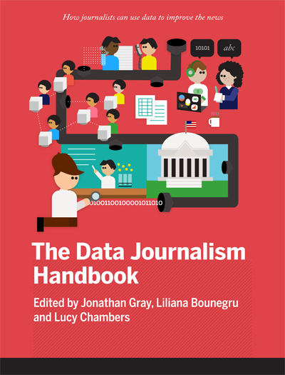

前付け
はじめに
ニュースルームにて
- ABCでのデータ・ジャーナリズムの実践
- BBCにおけるデータ・ジャーナリズム
- シカゴ・トリビューン紙のニュース・アプリ・チームはどのように働いているか
- ガーディアンのデータブログの裏側
- Zeit Onlineでのデータ・ジャーナリズム
- どうやってハッカーを雇えばいいの？
- 外部の専門家を活用する
- その金を追え！: データ・ジャーナリズムとクロスボーダー・コラボレーション
- コードとして生まれるストーリー
- Kaas & Mulvad: ステークホルダーたちのための未完成コンテンツ
- データ・ジャーナリズムのためのビジネスモデル
ケーススタディ
- 機会格差
- 欧州構造基金に対する九ヶ月の分析
- ユーロ圏の崩壊
- OpenSpending.orgで国庫を見ていく
- フィンランド議会選挙と運動資金
- リアルタイム選挙ハック
- ニュースにおけるデータ: ウィキリークス
- Mapa76 ハッカソン
- the Guardianのデータブログによる、イギリス暴動の報道
- イリノイ学校のレポート・カード
- 病院の請求
- ケアホームの危機
- 全てを語る電話
- MOT不合格車はどのモデル？
- アルゼンチンにおけるバスの補助金
- 市民のデータ・レポーター
- 選挙結果を示す「ビッグ・ボード」
- 水の価格のクラウドソーシング
データを取得する
- 5分でわかるフィールド・ガイド
- データの請求権
- 情報公開法を使い倒せ！
- ウェブからデータを得る
- データソースとしてのウェブ
- ガーディアンのデータブログでのクラウドソーシング
- （ガーディアンの）データブログは五輪チケットに関する報道のためにクラウドソーシングをどう使ったか
- データの利用と共有: 法の基本原則と例外規定、そして現実
データを理解する
- ３つのシンプルな手順でデータが読み書きできるようになるには
- ニュースの中の数値を扱うためのヒント
- データを扱うための基礎的な手順
- 一塊32ポンドのパン
- データで始まり、ストーリーで終わる
- データは語る
- データ・ジャーナリスト達のお気に入りのツール
- データ可視化を利用してデータの中の知見を見つける
データを提供する
